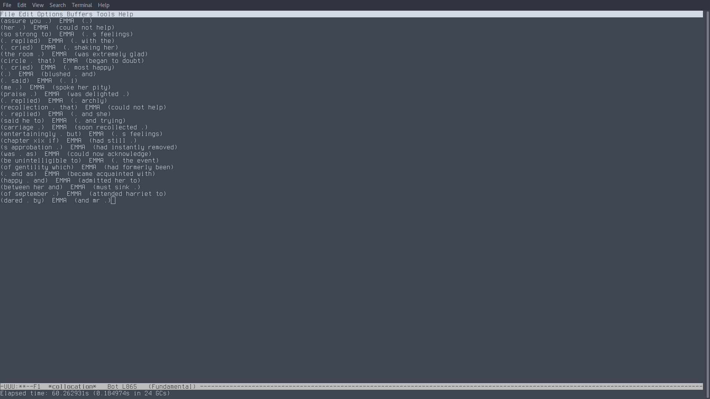
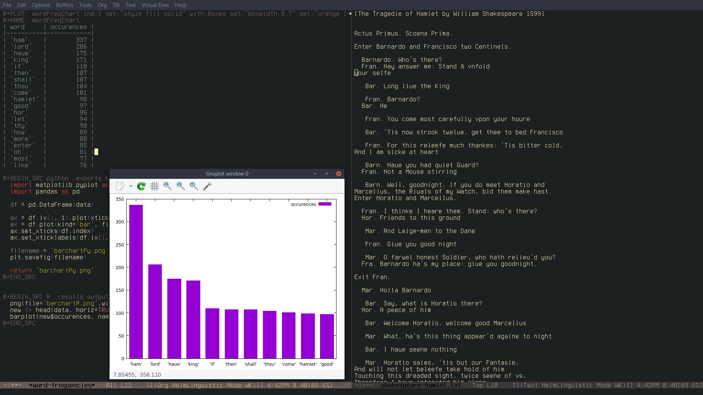

Linguistic Mode
1 Introduction
Linguistic mode allows to perform basic linguistic analysis on a buffer's contents. It is possible to do collocation searches and obtain word or ngram frequencies.
It was designed in order to introduce linguistics students and linguistics enthusiasts to the field corpus analysis. Therefore, it is quite ideal for simple analyses on small files.
2 How to install
You can install the package from MELPA with ~M-x package-install linguistic~
Alternatively, you can use ~M-x package-build-create-recipe~ and use the following:
(linguistic :fetcher github :repo "andcarnivorous/linguistic-mode" :files ("*.el" "*.org"))
If you want to install with git clone you will have to tweak the functions ~linguistic-gram-freq~ and ~linguistic-word-freq~ in order for them to find the graph.org file.
3 How to use
The main interactive functions are 4:
- `linguistic-collocation`
- `linguistic-ngrams` (C-c C-g)
- `linguistic-word-freq` (C-c C-w)
- `linguistic-grams-freq` (C-c C-n)
If you activate the minor mode with `M-x linguistic-mode` these functions will be available with their respective keybindings.
3.1 Building a Corpus
If you want to build a custom corpus from different files, buffers or regions you can do so by using the functions (these do not have keybindings):
- `linguistic-build-corpus`
- `linguistic-collect-file`
- `linguistic-collect-buffer`
- `linguistic-collect-region`
With `linguistic-build-corpus` you will just create a new empy buffer called corpus, where then you can maybe copy-paste things from other windows in your OS.
With the other functions you can take the contents of multiple files, buffers or regions and have them put all together in a new buffer called corpus.
This allows you to maybe take the contents of a .txt file, some eww buffers and a region of a file and put them all together to be scrutinized by means of the previous functions.
### Basic operations
With linguistic-mode you can get the number of sentences in a raw corpus and also the average number of characters or words per sentence.
- `linguistic-count-sentences`
- `linguistic-average-sent-length`
- `linguistic-average-words-sent`
3.2 Collocation
This function allows you to find every instance of a word in the buffer and its surrounding context. The size of the context (how many words on the left and right will be displayed) is chosen by the user.
After calling `linguistic-collocation` you will be asked to insert the number of words after the keyword, before the keyword and finally the keyword itself. Remember that the keyword should always be lowercase.
Once the function has analyzed the whole buffer it will return in a new buffer the list of all the occurrences of the selected keyword.
If you use 0 as number for your context before and/or after the keyword the word "nil" will show up instead of any context.
Remember that the more words on the sides, the more it will take to analyze the buffer. The function also substitutes any punctuation with a period.

3.2.1 Collocation Frequency
The new function `linguistic-collocation-freq` requires the same input as the other one, but it returns in a new buffer the list of all the collocates and their frequencies.
3.3 Ngrams
This function will return a list, in a new buffer, of all the ngrams present in the buffer and the number of ngrams resulted.
When you call `linguistic-ngrams` you will have to insert the size of the ngram first.
3.4 Word Frequency
This function will return, in a new buffer, an org-table with the N most frequent words in the buffer or selected area and their occurrences. The new buffer will also contain some code snippets in Python, Gnuplot and R that will allow you to get a bar chart of the result.
When you call `linguistic-word-freq` you will be asked how long you want the result list (the table, basically) to be. If you choose a number that is higher than the number of single words in the result, the function will return an error.
You will also be asked if you want to include stopwords or not. Stopwords are words that usually are not really relevant to word-frequency analysis (e.g. "and", "I", "what", "could", etc…).

3.5 Ngram Frequency
This function works just like `linguistic-word-freq` and can be applied to the whole buffer or a selected area. The only difference is that you will also be prompted to insert the size of the ngram you want in your result (2 for bigrams, 3 for trigrams and so on).
3.6 Custom variables
There are 2 custom variable that you can customize with `M-x customize-group linguistic-analysis`:
- `linguistic-splitter` contains the regex that regulate which special characters will be included in ngrams, word-freq and grams-freq.
- `linguistic-stopwords` contains a list of words that will not be included in word-freq if the uses chooses to apply the stopwords filter.
4 Examples
4.1 Integration with eww
A nice way to use linguistic-mode is to implement it when browsing with eww. Instead of copy-pasting the contents of a tabloid article in a new txt file or stripping the html in other programming languages, it is possible to have preliminary results immediately, which can be quite handy to people just starting out with corpus linguistics.
4.2 With large .txt files
When you use linguistic-mode on big files the waiting time for results can be long.
Using `linguistic-collocation`, with an i5, it took this machine 61 seconds to find all the occurrences of the word "emma", with 3 context words on each side, in the novel "Emma" by Austen. Instead it took 33 seconds to find the same word with just 1 context word per side.
Using `linguistic-grams-freq` to get the most frequent trigrams in the novel took 160 seconds.
5 TODO
[X]Preview word-freq and gram-freq list length before prompt.[ ]Affixes in collocation[ ]Snowball Stemmer